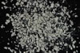

|
|
(For further information on spectroscopy, see:
http://speclab.cr.usgs.gov)
TITLE: Palygorskite CM46 Attapulgite DESCRIPT
DOCUMENTATION_FORMAT: MINERAL
SAMPLE_ID: CM46
MINERAL_TYPE: Phyllosilicate
MINERAL: Palygorskite (Attapulgite)
FORMULA: (Mg,Al)2Si4O10(OH)*4H2O
FORMULA_HTML: (Mg,Al)2Si4O10(OH)•4H2O
COLLECTION_LOCALITY: Quincy, Florida
ORIGINAL_DONOR: Clay Mineral Standard from Wards Natural Science Inc.
CURRENT_SAMPLE_LOCATION: USGS Denver Spectroscopy Laboratory
ULTIMATE_SAMPLE_LOCATION: USGS Denver Spectroscopy Laboratory
SAMPLE_DESCRIPTION:
Spectrum published in: Clark, R.N., T.V.V. King, M. Klejwa, G. Swayze, and N. Vergo, 1990, High spectral resolution reflectance spectroscopy of minerals: J. Geophys Res. 95, 12653-12680.
Who note the sample is spectrally pure, no smectite bands.
IMAGE_OF_SAMPLE:

END_SAMPLE_DESCRIPTION.
XRD_ANALYSIS:
Analysis by Norma Vergo indicates Palygorskite, medium amount of quartz, trace amount of smectite.
END_XRD_ANALYSIS.
COMPOSITIONAL_ANALYSIS_TYPE: XRF # XRF, EM(WDS), ICP(Trace), WChem
| COMPOSITION KEYWORD |
Oxide ASCII |
Amount | Weight Percent, % |
Oxide html |
|---|---|---|---|---|
| COMPOSITION: | SiO2 | 56.0 | wt% | SiO2 |
| COMPOSITION: | TiO2 | 0.48 | wt% | TiO2 |
| COMPOSITION: | Al2O3 | 10.6 | wt% | Al2O3 |
| COMPOSITION: | Fe2O3 | 3.76 | wt% | Fe2O3 |
| COMPOSITION: | MnO | less than 0.02 | wt% | MnO |
| COMPOSITION: | MgO | 8.56 | wt% | MgO |
| COMPOSITION: | CaO | 1.35 | wt% | CaO |
| COMPOSITION: | Na2O | less than 0.15 | wt% | Na2O |
| COMPOSITION: | K2O | 0.95 | wt% | K2O |
| COMPOSITION: | P2O5 | 0.59 | wt% | P2O5 |
| COMPOSITION: | LOI | 17.0 | wt% | LOI |
| COMPOSITION: | Total | 99.46 | wt% |
COMPOSITION_TRACE:
COMPOSITION_DISCUSSION:
Analysis by E. Brandt, and J. H. Christie at USGS Branch of Geophysics, Denver
END_COMPOSITION_DISCUSSION.
MICROSCOPIC_EXAMINATION:
90-95 vol% palygorskite
5-10 vol% quartz
trace opaque grains
Bimodal grain size distribution:
population 1 430µm 70 vol%
population 2 30µm 30 vol%
avg. grain size = 176µm
Light grayish white color, quartz grains do not have palygorskite coatings. Trace opaques sparsely spot palygorskite grains. G. Swayze.
END_MICROSCOPIC_EXAMINATION.
SPECTROSCOPIC_DISCUSSION:
END_SPECTROSCOPIC_DISCUSSION.
SPECTRAL_PURITY: 1b2_3_4_ # 1= 0.2-3, 2= 1.5-6, 3= 6-25, 4= 20-150 microns
| LIB_SPECTRA_HED: | where | Wave Range | Av_Rs_Pwr | Comment |
|---|---|---|---|---|
| LIB_SPECTRA: | splib04a r 3798 | 0.2-3.0µm | 200 | g.s.= 176 µm |
| LIB_SPECTRA: | splib05a r 5315 | 0.2-3.0µm | 200 | g.s.= |
| LIB_SPECTRA: | splib06a r 17404 | g.s.= |
{kind=link}